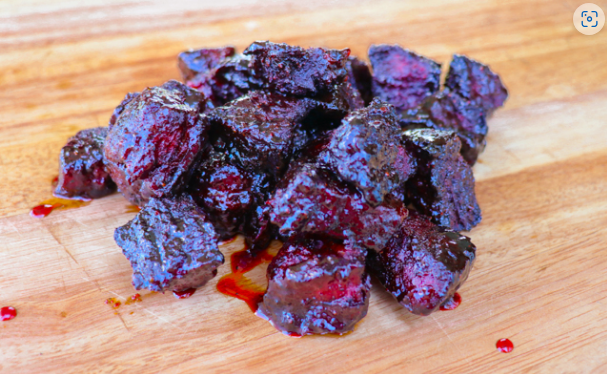

Chuck Burnt Ends

Chuck burnt ends are beef burnt ends made with a chuck roast instead of a brisket. They are seasoned with BBQ rub and smoked until they are nearly fall-apart tender and then basted in finger-licking BBQ sauce. They are the best bite in the BBQ world, next to real Burnt Ends.
Ingredients
- 1 chuck roast 3lbs
- 2 tbsp BBQ Rub
- 2 tbsp AP Rub
- 1 cup BBQ Sauce
- 1/2 cup Beef Broth
- 1/2 tsp baking powder
- 1/2 tsp salt
Directions
- Preheat smoker to 275 degrees
- Cut chuck roast into 1” x 1” cube portions. Season with the rubs. Place each piece of chuck roast on raised cooking rack allowing space around each piece.
- Place the racks in the smoker for 1 1/2 - 2 hours.
- Remove the burnt ends from smoker and arrange in aluminum 1/2 size pan. Combine bbq sauce and beef broth and pour over burnt ends. Place foil over pan and return to smoker.
- Continue to cook for 2 hours or until burnt ends are tender. Use your fingers to squeeze a couple. When you can almost squeeze them in half they are done.
- Mix with sauce and remove from pan and serve.